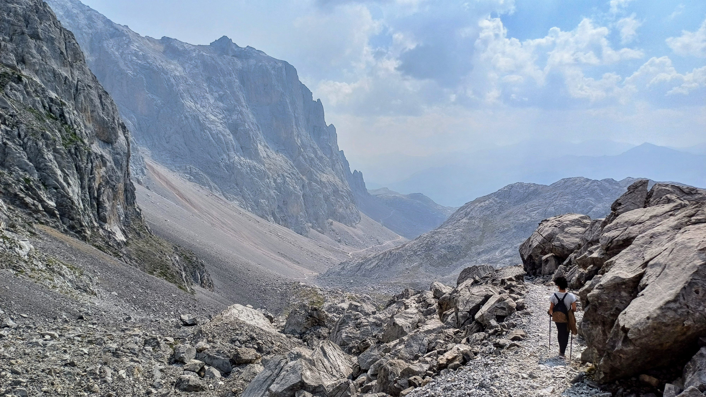

Inhóspito
19/09/2024
Fotografía
Aquí no hay ningún lugar para protegerse del miedo. (clic para seguir leyendo)
Aquí no hay ningún lugar para protegerse del miedo. Tampoco hay ningún lugar para comer o para beber agua. No un árbol para dar sombra, ni un hueco donde protegerse de la lluvia. No hay ningún hospital, ninguna carretera, ninguna esperanza de poder seguir adelante si te tuerces un tobillo. No hay caras amables, ni ayuda, ni consejos. Ningún hombro te consolará, ningún ser de luz te mostrara el camino. Aquí sólo estás tú.
Pero aquí hay una oportunidad de aprender y conocer. Hay lecciones que tú mismo te impartes, errores que pagas con dinero, con salud, o con tu vida. Aquí nada depende de ti, pero al mismo tiempo todo depende ti. No depende de ti si llueve, pero sí lo que haces con la lluvia, no depende de ti enfermar o sufrir, pero sí depende de ti afrontarlo o dejarse caer por esa pendiente de roca que te lleva aunque no quieras al otro lado.

Fuente dé, Picos de Europa, Cantabria.Vuelve arriba